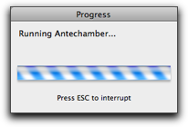
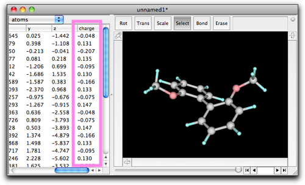

第六段階：分子力学計算によるエネルギー最小化
1. Molby の分子力学計算について
手作業で作成した分子モデルは、不自然な結合長、結合角、van der Waals 接触などを含んでいます。このような不自然な構造を修正するには、分子力学のテクニックが便利です。
Molby の分子力学計算は、基本的な分子力場（結合の伸縮、結合角のたわみ、二面角の回転、improper torsion、van der Waals 相互作用、静電相互作用）に基づいています。静電相互作用以外については、パラメータのセットが用意してあり、原子に与えられた「原子タイプ」から必要なパラメータを取り出して計算に使います。
デフォルトでは、Molby は gaff パラメータセットを使います。Gaff は "General AMBER Force Field" の略で、AMBER 分子動力学パッケージの一部です。AMBER 開発者の好意により、分子力場パラメータはパブリックドメインとされています。なお、Molby は parm99 パラメータセットも同梱しています。これも AMBER の分子力場であり、生体分子の計算に広く使われています。
分子力場を使うときに厄介なのは、原子タイプをどうやって指定するかです。AMBER には、このための便利なプログラム AmberTools が含まれています。これもまた AMBER 開発者の好意により、AmberTools はフリーソフトウェア（GPLv2）として公開されています。Molby は AmberTools のプログラムの一部を同梱しています。
以下の論文は AMBER 開発チームによるものです。AMBER パラメータや AmberTools プログラムの機能を使った場合は、発表論文にこれらの論文を引用してください。
- Wang, J.; Wolf, R.M.; Caldwell, J.W.; Kollamn, P.A.; Case, D.A. Development and testing of a general Amber force field. J. Comput. Chem., 2004, 25, 1157–1174.
- Wang, B.; Merz, K.M. Jr. A fast QM/MM (quantum mechanical/molecular mechanical) approach to calculate nuclear magnetic resonance chemical shifts for macromolecules. J. Chem. Theory Comput., 2006, 2, 209–215.
2. エネルギー最小化の方法
さて、エネルギー最小化をやってみましょう。例として 2,2'-ジメトキシビフェニルを使うことにします。
 2,2'-ジメトキシビフェニル
2,2'-ジメトキシビフェニル
この分子のモデルを作ってください。簡単なやり方は、(1) 空の編集エリアでダブルクリックして "C6H5C6H5" とタイプする。(2) オルト位の水素原子を１つ選択し、ダブルクリックして "OCH3" とタイプする。(3) もう１つの環のオルト位の水素原子について、(2) を繰り返す。

"MM/MD"メニューを開き、"Guess MM/MD Parameters..." コマンドを実行します。
下のようなダイアログが現れます。これは現在の分子に対して Antechamber を実行するためのものです。一番上のチェックボックス "Calculate partial charge" をオフ、その下の "Guess Atom Types" をオンにしてください。"Log" ディレクトリは、AmberTools のプログラムが中間ファイルを保存するのに使います。デフォルトの位置で問題はないでしょうが、変更してもかまいません。
"OK"を押すと、２つのダイアログが順に現れます。すぐに消えてしまうので、何と書いてあるか読めないかも知れません。最初のものは "Running antechamber", ２つめのものは "Running parmchk" と書いてあります。これらは AmberTools に含まれているプログラムです。今の場合は、両方とも正しく実行され、次のダイアログが現れます。

"OK"を押して、分子のウィンドウに戻ってください。何が変わったかわかるでしょうか？ 変わったのは原子タイプです。具体的には、原子０と原子１０のタイプが "ca" から "cp" に変わっています。

"ca" や "cp" が何の意味か知りたければ、"MM/MD" メニューから "View Global Parameters..." を選んでみてください。Molby に同梱されているパラメータの一覧表が出てきます。"vdw" （van der Waals パラメータの意味ですが、原子タイプの定義も兼ねています）の中で "ca", "cp" を見つけて、表の右端にあるコメントを見てみてください。
分子のウィンドウに戻り、"MM/MD" → "Minimize" を選んでください。

設定ダイアログが開きます。"Steps per frame" は、構造最適化計算がこのステップ数進んだところで画面を更新する、という意味です。"Number of frames" は、この数だけ画面を更新したら計算を止める、という意味です。その前に構造最適化が終了すれば、その時点で計算は止まります。下の図にある 10, 200 を入れておけば、たいていの場合はよいでしょう。
"OK" を押すと、構造最適化が始まります。この分子の場合、期待される通り、２つのベンゼン環の間の二面角がだんだん大きくなります。指定通り、200回画面が更新されると計算は止まります。ウィンドウの右下に "200" という数字があり、ウィンドウの下辺にあるスライダーが有効になっています。更新された画面は、それぞれ独立したフレームとして保存されており、このスライダーを動かすと、初期状態からどのように構造が変わって行くかを再現することができます。
この時点で分子を "mbsf" フォーマットで保存すると、全部のフレームの情報が保存され、ファイルがとても大きくなります。これが好ましくない場合は、現在表示されている以外のフレームを削除することもできます。"Script" メニューから "Delete Frames..." コマンドを使ってください。

3. 静電相互作用の取り扱い
上の説明は、分子構造のひずみを取り除く最初の段階としては十分です。しかしながら、次の段階として、静電相互作用を考慮しなければなりません。特に、カルボニル基などの極性官能基が含まれている場合は、これは重要です。
2,2'-ジメトキシビフェニルについて検討を続けましょう。"MM/MD" → "Guess MM/MD Parameters...", を開き、今度は一番上のチェックボックスをオンにします。そして、分子の総電荷が正しいことを確認してください。この場合は中性分子なので、"0" で結構です。
"OK" を押すと、計算が始まります。今度は、前回よりもずっと長く計算時間がかかります。半経験的分子軌道法により、構造最適化と部分電荷の計算を行うからです。

計算が終了すると、分子構造は少し変化することがあります。半経験的分子軌道計算で構造最適化が行われたからです。また、"charge" の値が設定されていることがわかります。テーブルを右にスクロールすると、与えられた電荷の値を見ることができます。この電荷の値を用いて静電相互作用の計算を行うことにより、極性官能基の相互作用エネルギーをより正しく見積もることができます。

上の方法で計算した電荷は、半経験的分子軌道計算によるものです。一方、一般的には ab initio 計算で求めた電荷の方が良いと考えられています。Molby は ab initio 計算を行う機能を持っていませんが、外部の量子化学計算プログラムへの入力ファイルを作成する機能があります。これは、このマニュアルの別のところで解説します。